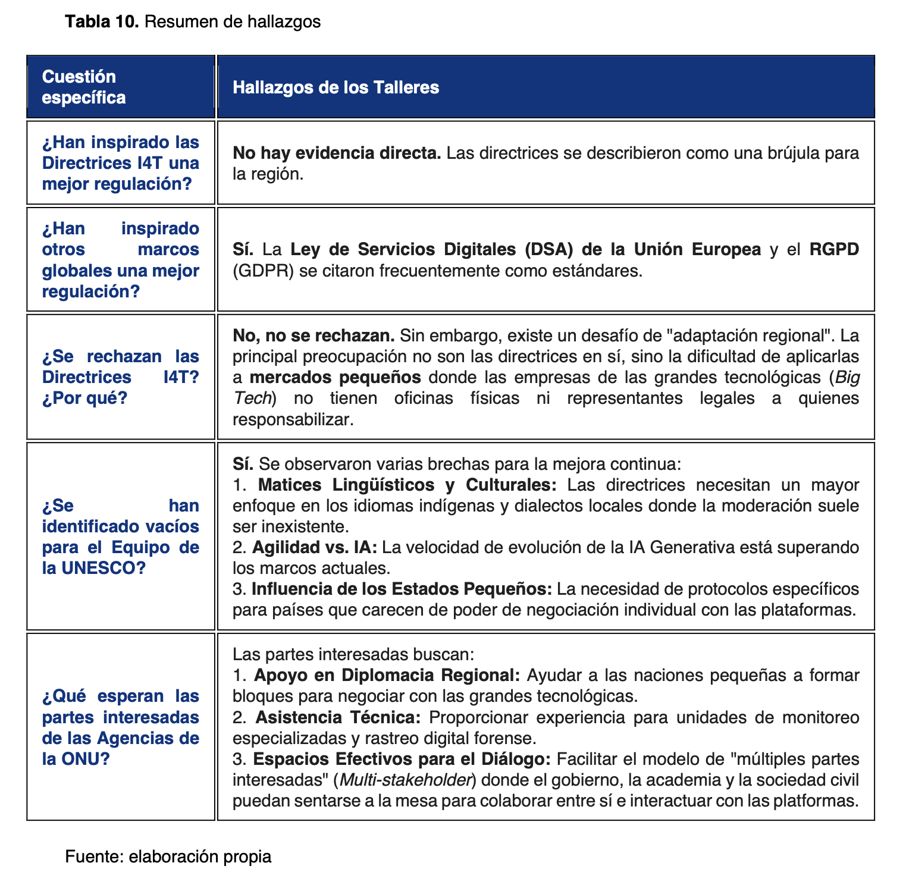

11. Los talleres de capacitación para México,
Centroamérica y e Caribe
Con el apoyo de la UNESCO, y la financiación de la Unión Europea, la I4T Global Knowledge Network organizó una serie de talleres de capacitación sobre la regulación de las plataformas digitales en el contexto de las Directrices UNESCO en Santo Domingo, en la República Dominicana, bajo una modalidad híbrida (presencial y online). Este evento se enmarcó dentro del proyecto de la UNESCO titulado "Safeguarding Freedom of Expression and Access to Information through the implementation financiamiento y respaldo de la Unión Europea, al igual que el presente reporte. El objetivo principal de estos encuentros fue generar un espacio de análisis y formación en torno a la implementación de las Directrices de la UNESCO, promoviendo un enfoque basado en los derechos humanos para regular el ecosistema digital en la región.
Para garantizar un entorno libre y abierto para el debate, las sesiones se desarrollaron bajo la Chatham House Rule, permitiendo a los asistentes utilizar la información compartida sin revelar la identidad o afiliación de los ponentes. La organización del evento fue el resultado de una amplia alianza interinstitucional y académica. Entre las entidades organizadoras y colaboradoras destacaron instituciones de educación superior y redes globales, tales como, la UPF Barcelona School of Management, que lideró la organización e impartición de los talleres, la Universidad Complutense de Madrid la Universidad Católica Santo Domingo (UCSD), que fue el organizador local, la Red Mundial de Justicia Electoral, y el Instituto de Formación y Estudios en Democracia (IFED) del Tribunal Supremo de Elecciones de Costa Rica.
La convocatoria logró reunir a actores clave en la gobernanza y protección de los derechos en el ámbito digital, integrando una perspectiva multistakeholder. Por el lado gubernamental y electoral, participaron varias autoridades de la región, incluyendo al Tribunal Supremo de Elecciones de Costa Rica, el Tribunal Superior Electoral de El Salvador, el Tribunal de Justicia Electoral de Honduras, el Tribunal Electoral de Panamá, el Instituto Nacional Electoral de México y el Tribunal Superior Electoral de la República Dominicana, así como la Autoridad Nacional de los Servicios Públicos de Panamá, el Instituto Dominicano de las Telecomunicaciones (INDTOEL) y el Ministerio de Tecnología e Innovación de la República Dominicana. Desde la perspectiva ciudadana, el evento contó con una robusta representación de organizaciones de la sociedad civil, tales como ARTICLE 19 (México y Centroamérica), Derechos Digitales y el Centro de Investigación de Derecho Digital (Costa Rica), SocialTIC y Cultivando Género (México), la Asociación Nacional de Abogados de Empresa (ANADE, también de México), ACI Participa (Honduras), Dominicanos por Derecho (República Dominicana), la Cámara de Tecnologías de la Información y Comunicación (CAESCO, también de República Dominicana) y el Instituto Panamericano de Derecho y Tecnología junto a Internet Society (Panamá).
11.1 Principales aportaciones y conclusiones de las jornadas
El primer día de los talleres, celebrado el 8 de diciembre de 2025, se desarrolló bajo el eje temático central de la "Regulación de Plataformas Digitales en el Interés Público". La jornada arrancó con una sesión introductoria a cargo de la UNESCO, que sirvió para presentar los objetivos y prioridades de las Directrices de la UNESCO, y se enfatizó que el objetivo no es nunca censurar contenidos específicos, sino regular los sistemas, procesos y algoritmos de las empresas tecnológicas bajo un enfoque de derechos humanos y responsabilidad compartida. Con esto se estableció la hoja de ruta y el contexto general que guiaría los debates de los próximos dos días.
Posteriormente, se dio paso a la primera sesión, centrada en la presentación del reporte sobre el "Mapeo del marco regulatorio de Centroamérica y el Caribe" que precede a estas líneas. Durante este espacio, se expusieron los hallazgos más relevantes del diagnóstico regional y se discutió sobre el nivel de alineamiento normativo de los países de la región con las Directrices de la UNESCO. Esta presentación técnica sirvió como punto de partida para un enriquecedor intercambio de opiniones con las autoridades y representantes de sociedad civil presentes, permitiéndoles debatir sobre sus perspectivas institucionales y fijar prioridades tanto a nivel nacional como regional.
La exposición del diagnóstico regional detonó un primer intercambio en el que los representantes de autoridades, académicos y sociedad civil coincidieron en que existe una evidente dispersión normativa. Se destacó una profunda paradoja en la región: si bien los Estados han demostrado una alta eficacia para aplicar y recaudar impuestos (como el IVA) a los servicios digitales transfronterizos y plataformas de streaming, existe un vacío casi total cuando se trata de exigirles protección a los derechos humanos o transparencia, un diagnóstico compartido por sociedad civil y autoridades.
La segunda sesión estuvo dedicada a analizar las “Brechas regulatorias y articular las respuestas desde la sociedad civil”. Se profundizó en los vacíos normativos encontrados en la región, haciendo especial énfasis en los riesgos para la protección de los derechos humanos. Fue un espacio de escucha activa donde se invitó a las organizaciones de la sociedad civil —conectadas tanto en modalidad presencial como en línea— a exponer sus principales retos, expectativas y preocupaciones frente a los intentos de regulación de plataformas y la intervención gubernamental en sus respectivos países.
Voces de la sociedad civil, y la academia, advirtieron que la región está llena de buenas propuestas y documentos, pero que en la práctica terminan siendo “letra muerta” por la falta de voluntad política. Un representante de autoridad electoral reconoció esta realidad, resaltando que en el plano político ha sido muy difícil crear consensos para regular el entorno digital pues partidos políticos y candidatos a m menudo se benefician de la manipulación y las campañas de desinformación. Se puso como ejemplo la propia República Dominicana, en donde la legislación electoral no contempla las campañas digitales, pero los intentos legislativos para abordarlas no han logrado prosperar.
Los representantes de autoridades presentes también expresaron una profunda frustración respecto de sus esfuerzos para acercarse a las plataformas y colaborar. Un representante de autoridad electoral afirmó que estas corporaciones “juegan en primera división” y siempre priorizan la monetización del discurso de odio y la polarización, y que a menudo tienen más recursos técnicos y materiales que las propias autoridades. Desde la sociedad civil se denunció que las plataformas suelen ignorar sus reportes sobre violencia digital, vigilancia estatal o acosos coordinado, escudándose en políticas internas o incluso en la “relevancia social” de usuarios problemáticos. Además, criticaron que las tecnológicas suelen reunirse a puerta cerrada con los gobiernos, pero excluyendo a la sociedad civil de las mesas de diálogo.
Un testimonio de sociedad civil puso el foco en la brecha educativa y manifestó que es imposible construir una gobernanza digital efectiva si la ciudadanía y los servidores públicos carecen de una alfabetización mediática básica, y mientras persista una alta dependencia y falta de autonomía tecnológica en la región.
Finalmente, diversas organizaciones señalaron que, ante casos de violencia digital, el Estado no sabe cómo reaccionar y las víctimas no tienen canales de denuncia claros, a menudo pasando de policía cibernética a fiscalías y agencias de telecomunicación sin encontrar remedio adecuado, lo que agrava la indefensión ciudadana. Esto confirma el diagnóstico regional que pone el foco en los vacíos normativos, la fragmentación y la indefinición de competencias entre las autoridades relevantes.
La tercera sesión y última sesión del día tuvo un enfoque totalmente práctico, con el resto de la jornada dedicada a la "Tabla Periódica de la I4T Global Knowledge Network” que utilizó dicho instrumento para articular una dinámica de co-creación, integrando ejemplos reales extraídos del
reporte regional para que las autoridades y las entidades de la sociedad civil trabajaran de manera conjunta en propuestas para abordarlos. El objetivo de este ejercicio fue diseñar mapas de gobernanza que resolvieran necesidades regulatorias específicas sin comprometer las garantías de la libertad de expresión y otros derechos.
Divididos en grupos para trabajar de manera conjunta, autoridades y sociedad civil presentaron propuestas de mapas de gobernanza para resolver problemas específicos generando varias propuestas:
• Moderación híbrida con contexto local: Un grupo enfatizó que la moderación puramente automatizada mediante algoritmos es ineficaz e incluso peligrosa en la región puesto que la inteligencia artificial es incapaz de entender sutilezas, modismo y contextos culturales, apuntando que incluso los homónimos pueden variar drásticamente de significado entre países. Por ello, presentaron un modelo que obliga a las plataformas a implementar mecanismos de moderación de contenidos híbrida, que utiliza automatización pero que contiene mecanismos de estricta supervisión humana y conocedora del contexto local, remarcando que siempre han de ser las personas las que tomen las decisiones finales. Para ello también se resaltó la pertinencia de contar con mecanismos de apelación y debido proceso robustos que permitan revisar las decisiones y dar remedio adecuado cuando es necesario.
• Soberanía de datos: Un segundo grupo alertó sobre la vulnerabilidad de la privacidad y los datos personales a nivel regional, apuntando que apenas el 20% de los centros de datos que almacenan información latinoamericana se encuentran dentro del continente. Discutieron la necesidad de fortalecer la protección de datos personales y diseñar mecanismos regulatorios que puedan empoderar a los ciudadanos para exigir la eliminación de su información tras cierto tiempo, que puedan facultar a las autoridades para proteger información especialmente sensible (por ejemplo, registros de votantes) y para ello se apuntó que, además de normativa reforzada, era necesario crear mecanismos de coordinación interinstitucional.
• Mecanismos de rendición de cuentas/”siguiendo el dinero”: Finalmente, un tercer grupo analizó qué alternativas posibles existen para someter a las plataformas extranjeras a la jurisdicción local cuando estas no tienen presencia física en los países de la región. La propuesta planteó que, más allá de los entes electorales o de telecomunicaciones, las superintendencias del sistema financiero y las autoridades bancarias y tributarias pueden ser actores clave. Dado que las plataformas dependen de suscripciones, pagos con tarjeta de crédito y pautas publicitarías monetizadas localmente, este tipo de autoridades poseen una fuerza coercitiva que puede utilizarle para, por lo menos asegurarse que las plataformas sienten en la mesa de negociación. Se resaltó también que este tipo de autoridades pueden tener un rol importante a la hora de monitorizar y moderar contenidos fraudulentos en línea, particularmente cuando se relacionan con productos financieros, inversiones y otras operaciones bancarias. El ejemplo también sirvió para demostrar que en la gobernanza de plataformas es necesario pensar fuera de la caja y valorar el rol que pueden tener autoridades y entes reguladores que tienen competencias distintas a las que normalmente se mira a la hora de plantear esquemas de gobernanza y regulación de plataformas digitales.
Finalmente, el primer día concluyó con una clausura en la que se resumieron los hallazgos de los debates y se realizó una reflexión colectiva para definir cuáles deben ser las prioridades regulatorias ineludibles para la región en los próximos tres a cinco años. La reflexión colectiva dejó un mandato claro: frente a corporaciones transnacionales inalcanzables para países pequeños de forma aislada, la principal prioridad de los reguladores en los próximos tres a cinco años, debe ser la conformación de un bloque más sólido de alianzas regionales que permita la cooperación y coordinación interinstitucional y supranacional. Se resaltó también que es necesario un pacto social que una a los Estados, autoridades relevantes, la academia y la sociedad civil en Centroamérica y el Caribe que permita ejercer presión geopolítica para exigir respeto a los derechos humanos, transparencia algorítmica y un uso ético de la tecnología en el ecosistema digital.
El segundo día, 9 de diciembre de 2025, de los talleres se desarrolló bajo el eje temático "Protegiendo la Democracia en la Era Digital". La jornada comenzó con la primera sesión técnica, titulada "Respuestas Regulatorias y Jurisprudenciales ante la Desinformación Electoral". En este espacio se expusieron los principales hallazgos del reporte regional en materia de legislación orientada a combatir la desinformación y proteger la integridad de los comicios, destacando lecciones clave derivadas de la jurisprudencia. Esta presentación abrió un importante espacio de diálogo en el que las autoridades electorales de la región compartieron de primera mano sus experiencias, retos operativos y principales preocupaciones frente a las campañas de manipulación en línea.
Después se dio un intercambio de experiencias entre autoridades y sociedad civil. Un representante electoral presentó el dilema de “cuándo responder a la desinformación electoral sin ayudar a darle más visibilidad,” a lo que se respondió con un ejemplo desde Panamá, cuya autoridad relató cómo se creó un centro de monitoreo digital enfocado en la verificación rápida de hechos, y, crucialmente, en la formación ciudadana previa para que el electorado aprenda a identificar la desinformación por sí mismo. En este espacio de escucha, se constató que la narrativa desinformativa más común en la región es la que busca erosionar la credibilidad de los propios organismos electorales, a menudo mediante acusaciones infundadas de fraude, o explotando el desconocimiento de los procesos. Por ello, se concluyó que se han de sumar esfuerzos para proteger la integridad de los procesos, pero también para defender la institucionalidad de las autoridades y explicar mejor su rol como garantes de procesos electorales libres y equitativos.
El programa continuó con la sesión denominada "Anatomía de la integridad electoral en América Latina: de la desinformación al reto de la IA", que ofreció un análisis profundo sobre los procesos electorales recientes en diversos países del continente. La ponencia no solo resaltó los casos de éxito en las respuestas institucionales, sino que también puso un fuerte énfasis en la disrupción que representa la inteligencia artificial generativa y los retos emergentes que esta tecnología impone en la propaganda y las campañas políticas modernas.
Durante esta sesión, un representante de la autoridad costarricense planteó que el reto principal de los organismos electorales es cómo responder a la desinformación sin que la autoridad electoral se convierta en un actor político más. La conclusión compartida fue que las autoridades deben priorizar intervenir únicamente cuando la desinformación ataca la integridad del proceso electoral (por ejemplo, disuadiendo el voto o cometiendo violencia de género para excluir candidatos), y evitar convertirse en árbitros de mentiras intrapartidistas, para lo cual, además, se carece de recursos y herramientas objetivas.
La siguiente sesión adoptó una metodología altamente interactiva, centrándose en "El ciclo electoral y los riesgos digitales". Utilizando como base la guía de la UNESCO “Elecciones en la era digital”, autoridades y representantes de la sociedad civil trabajaron de manera conjunta para identificar amenazas a la integridad electoral y a los derechos humanos a lo largo de las tres etapas críticas del proceso democrático: el período pre-electoral, la jornada electoral y la fase postelectoral. Los participantes utilizaron la guía de la UNESCO para identificar riesgos en las tres etapas definidas del proceso electoral. El debate abordó la urgencia de regular el uso de la Inteligencia Artificial, señalando cómo esta tecnología abarata y automatiza la creación de perfiles psicográficos y la distribución de contenido falso, permitiendo la personalización de la persuasión política a niveles sin precedentes. Desde la Sociedad Civil se pidió poner el foco en medidas, como las vigentes en la Unión Europea, que prohíben la microsegmentación política basada en datos sensibles.
Este ejercicio colaborativo sentó las bases para la cuarta y última sesión práctica del día, cuyo objetivo fue trazar el camino "Hacia protocolos regionales para respetar derechos, preservar la integridad electoral y combatir la desinformación". A través de esta dinámica, los distintos sectores, en mesas de trabajo, dialogaron para consensuar prioridades y esbozar soluciones conjuntas que blinden la democracia siendo escrupulosamente respetuosas de los derechos humanos. Se acordó que, para enfrentar las amenazas a los procesos electorales de manera efectiva, la respuesta no puede depender únicamente de los organismos electorales, que a menudo
carecen de perfil y del presupuesto necesario para combatir campañas híbridas. Hubo consenso en que es necesario exigir transparencia en el financiamiento de las campañas digitales y promover alianzas con universidades y verificadores de datos.
Finalmente, el segundo día culminó con una sesión de clausura donde se resumieron las principales conclusiones de ambas jornadas. Los participantes realizaron una reflexión colectiva para definir la hoja de ruta y las prioridades regulatorias necesarias para proteger la democracia en la región de cara a los próximos años. Se acordó que es clave fortalecer las capacidades técnicas de los Estados, adaptar los marcos regulatorios a la realidad tecnológica y fomentar la alfabetización digital para blindar la confianza pública en los sistemas democráticos de la región. Se reiteró también la principal prioridad identificada después de las sesiones del primer día: en los próximos años, los reguladores deben priorizar la creación de alianzas regionales sólidas. Asimismo, Centroamérica y el Caribe necesitan un pacto social multisectorial para ejercer presión geopolítica y garantizar los derechos humanos, la transparencia algorítmica y la ética en el entorno digital.
11.2 Análisis de los principales retos y prioridades regionales
La celebración de los talleres antes descritos también sirvió para entablar diálogo y recoger opiniones directas de los participantes sobre las Directrices de la UNESCO y para poder obtener insumos que permitan perfilar el apoyo y evidencias que la I4T Global Knowledge Network puede aportar para apoyar en la construcción de esquemas de gobernanza efectivos en la región de América Central y el Caribe. Dichos insumos fueron recabados tanto de representantes de autoridades presentes como de representantes de organizaciones de la sociedad civil.
Se plantearon una serie de cuestiones y temas a representantes de autoridades y sociedad civil de México, Honduras, el Salvador, Panamá, Costa Rica y la República Dominicana que estuvieron presentes en los talleres.
A partir de este ejercicio, las discusiones se articularon en torno a los siguientes ejes temáticos para validar las conclusiones principales de los talleres:
• Cambio de paradigma hacia la regulación de procesos: Hubo consenso en que la regulación no debe centrarse en piezas de contenido individuales —para mitigar el riesgo de censura— sino en los sistemas y procesos de las plataformas. Se subrayó la necesidad de exigir transparencia en las políticas de moderación y recomendación de contenidos, el funcionamiento de los sistemas algorítmicos, las prácticas publicitarias y los mecanismos de denuncia para los usuarios.
• Convergencia regulatoria y responsabilidad compartida: Se evidenció una desconexión entre reguladores y legisladores al abordar el fenómeno de la desinformación. Ante esto, se argumentó que los desafíos digitales son globales y trascienden las fronteras nacionales. Se propuso una estrategia de diplomacia público-privada orientada a la creación de bloques regionales que otorguen mayor capacidad de negociación frente a las grandes empresas tecnológicas, mitigando así la falta de representación local en países más pequeños.
• Gobernanza basada en la infraestructura institucional existente: En lugar de crear nuevas burocracias o modificar de inmediato la legislación vigente, se recomendó aprovechar la experiencia y las capacidades técnicas de las agencias ya establecidas (tales como autoridades electorales, entes de telecomunicaciones y superintendencias bancarias, una propuesta que surgió de los propios talleres), fomentando mecanismos de coordinación interinstitucional pero también se incidió en la necesidad de seguir trabajando en la construcción de capacidades para estas instituciones y en construir esquemas de apoyo internacional para estos fines y para la transmisión de experiencias y evidencia de los mecanismos regulatorios y de gobernanza que han demostrado ser efectivos.
También se ha preguntado sobre los desafíos específicos identificados para Centroamérica y el Caribe:
• Vulnerabilidad electoral y falta de autonomía tecnológica: Se señaló que las plataformas operan como campos de batalla informativos durante los procesos electorales, mientras que los marcos legales nacionales suelen ser insuficientes para regular el "dinero oscuro" en la publicidad y las campañas digitales. A esto se suma una alta dependencia de infraestructuras extranjeras (servidores en la nube y servicios de Inteligencia Artificial), lo que compromete la soberanía digital y la protección de datos personales en la región.
• Alfabetización digital y contexto sociocultural: Se advirtió que la mera provisión de acceso a internet es insuficiente sin el desarrollo del pensamiento crítico ciudadano para identificar la desinformación y el discurso de odio. Asimismo, se criticó la aplicación de políticas de moderación uniformes por parte de las plataformas, las cuales suelen ignorar los matices culturales y las lenguas indígenas de cada país, resultando en acciones ineficaces o discriminatorias.
• El desafío de la Inteligencia Artificial Generativa: Se catalogó a la IA generativa como un nuevo riesgo sistémico. Se destacó la urgencia de establecer marcos éticos y regulatorios claros para prevenir abusos, como la proliferación de deepfakes, que puedan vulnerar la dignidad humana o socavar la integridad de los procesos democráticos.
La I4T Global Knowldege Network también planteó una serie de cuestiones sobre las que se buscó información en los propios talleres y a través de las conversaciones directas. Lo siguientes se construyó a partir de las transcripciones de las dinámicas generales de los talleres y otras conversaciones particulares y a partir de puntos/objetivos fijados previamente:
• Impacto de las Directrices de la UNESCO en los marcos regulatorios de la región. Al evaluar el impacto de las Directrices I4T en la región, no se encontró evidencia directa de que hayan inspirado mejoras regulatorias concretas hasta el momento; sin embargo, los participantes las describieron como una "brújula" valiosa para la región. En contraste, marcos globales europeos, como la Ley de Servicios Digitales (DSA) y el Reglamento General de Protección de Datos (RGPD), sí han servido de inspiración y fueron citados frecuentemente como los estándares a seguir. Como se ha visto, sin embargo, aunque hay mucho trabajo por hacer en la región, en la legislación que sí existe, se han encontrado varios ejemplos de alineamiento, siendo el principal el marco constitucional de los distintos países.
• Percepción y Desafíos de Implementación. Es importante destacar que las Directrices I4T no son rechazadas por los actores locales. El verdadero obstáculo radica en el desafío de la "adaptación regional". La principal preocupación de las partes interesadas no son los lineamientos en sí mismos, sino la dificultad práctica de aplicarlos en mercados pequeños. En estos países, las empresas gigantes de la tecnología generalmente no tienen oficinas físicas ni representantes legales, lo que hace casi imposible exigirles responsabilidades o rendición de cuentas a nivel local.
• Áreas de Oportunidad y Vacíos Identificados. Durante las sesiones y conversaciones, se señalaron varias brechas que requieren atención continua por parte UNESCO: Matices lingüísticos y culturales: Se evidenció que las directrices necesitan un o enfoque mucho más profundo en los idiomas indígenas y dialectos locales, contextos en los cuales la moderación de contenido por parte de las plataformas es, a menudo, inexistente. Agilidad frente a la Inteligencia artificial: Existe una preocupación latente de que la o velocidad a la que evoluciona la IA Generativa está superando rápidamente la capacidad de respuesta de los marcos regulatorios actuales.
Poder de influencia de los Estados pequeños: Se identificó la necesidad urgente o de crear protocolos específicos para aquellos países que, por su tamaño, carecen del poder de negociación individual necesario para enfrentarse a las grandes plataformas.
• Expectativas hacia las Agencias de la ONU. Frente a estos desafíos, las partes interesadas tienen expectativas muy claras sobre el apoyo que requieren de las agencias de Naciones Unidas. En primer lugar, solicitan apoyo en diplomacia regional para ayudar a las naciones pequeñas a formar bloques sólidos que les permitan negociar en conjunto con las Big Tech. En segundo lugar, requieren asistencia técnica para desarrollar unidades de monitoreo especializadas y capacidades de rastreo digital forense. Por último, esperan que la ONU facilite espacios efectivos para el diálogo, promoviendo un modelo de múltiples partes interesadas que logre sentar en la misma mesa al gobierno, la academia y la sociedad civil.

Toda la información y opiniones recopiladas permiten a la I4T Global Knowledge Network identificar una lista de puntos clave a escalar desde Centroamérica y el Caribe, los cuales pueden ayudar a la red a enfocar su colaboración con la región durante los próximos años:
• Soberanía Lingüística: Trabajar para que las plataformas proporcionen informes de transparencia específicamente para idiomas indígenas y regionales, no solo para el "español" en su conjunto. También deben de tenerse en cuenta las diferencias existentes entre las distintas formas de hablar el español en los países de la región.
• Protocolos de Negociación Regional: Desarrollar un marco de trabajo para que los estados pequeños negocien como un bloque con las plataformas y que la acción regulatoria y de gobernanza sea coordinada, asegurando que no sean ignorados debido al tamaño de su mercado.
• Análisis Forense de Respuesta Rápida: La UNESCO podría facilitar un "Centro de Asistencia Técnica Global" (Helpdesk) o una red de expertos a la que las autoridades electorales de los estados pequeños puedan recurrir durante los ciclos electorales activos para verificar la desinformación generada por Inteligencia Artificial.
• Explorar con más profundidad el rol de las autoridades bancarias para la Supervisión de las plataformas y riesgos existentes: Explorar la adopción de un modelo de "Superintendencia Bancaria" para la gobernanza de las plataformas. Este enfoque aprovecha la alta autonomía institucional y la experiencia técnica de los reguladores financieros para gestionar las plataformas como "riesgos sistémicos", utilizando protocolos probados de "Conozca a su Cliente" (KYC, por sus siglas en inglés) para rastrear el financiamiento (desinformación e interferencia publicitaria) y explorar mecanismos para congelar los pagos a las plataformas.
Los diálogos en América Central y el Caribe evidencian que existe consenso sobre la necesidad de un cambio de paradigma regulatorio: transitar de la moderación restrictiva de contenidos hacia la supervisión transparente de los sistemas, procesos y algoritmos de las plataformas digitales. Si bien las Directrices I4T de la UNESCO son valoradas como una brújula orientadora, la realidad operativa demuestra que las naciones pequeñas carecen de la influencia individual para exigir rendición de cuentas a las Big Tech. Esta vulnerabilidad se agrava frente a amenazas sistémicas como la desinformación electoral, la irrupción de la Inteligencia Artificial Generativa y la aplicación de políticas globales que ignoran sistemáticamente las lenguas indígenas y los matices culturales locales.
Para hacer frente a estos retos estructurales, la I4T Knowledge Network debe enfocar su colaboración en empoderar a la región mediante la acción colectiva y la innovación institucional. Las prioridades estratégicas exigen facilitar protocolos para que los países negocien como un bloque regional unificado, exigir la soberanía lingüística en los reportes de transparencia y desplegar asistencia técnica especializada. Asimismo, resulta fundamental capitalizar la infraestructura estatal existente explorando modelos innovadores, como el involucramiento de las autoridades bancarias para fiscalizar económicamente a las plataformas y poder identificar y hacer frente a riesgos sistémicos.